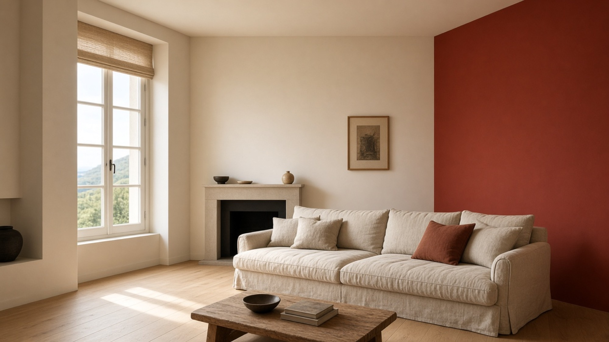
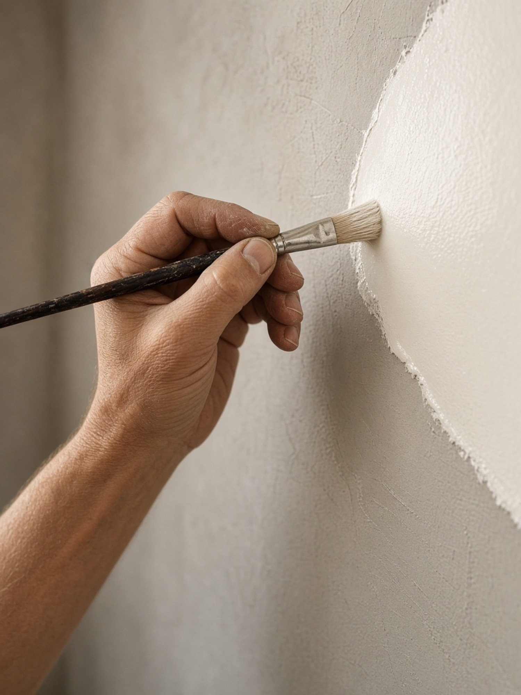

Joignable 24h/24
Peintre en bâtiment au Pays Basque et dans les Landes.
Peinture intérieure, extérieure, ravalement de façade et rénovation. Pour les particuliers et les professionnels.

16 avis Google

Savoir-faire
Préparer le support. Tenir la finition.
Top Peinture 64, peintre en bâtiment au Pays Basque et dans les Landes, accompagne particuliers et professionnels. Les abords sont protégés, les supports repris, la peinture menée jusqu’à un rendu net.
- 01 Murs, plafonds et boiseries regardés avant la couleur.
- 02 Chantier protégé, application soignée.
- 03 Maisons, appartements et locaux professionnels.
Prestations
Quatre façons d’intervenir.
Ambiances
La lumière, une fois les murs finis.
Aperçu de rendus. Les photos de vos chantiers prendront cette place.
Zone d’intervention
Au Pays Basque et dans les Landes.
Peinture et ravalement pour les maisons, les appartements et les locaux, du littoral basque à la côte landaise, et dans les communes alentour.
Une commune n’est pas dans la liste ? Appelez, on vous dit tout de suite si le déplacement est possible.
Avis Google · 4,9/5 · 16 avis
Un travail soigné, dit simplement.
« Très satisfait du travail réalisé ! Artisan sérieux, professionnel et ponctuel. Le travail a été effectué avec beaucoup de soin et dans les délais prévus. »
« J’ai appelé la société pour rénover plusieurs pièces, je suis très satisfaite du résultat… »
« Au top ! Très respectueux et professionnel, je recommande ! »
Le parcours
Trois étapes, sans détour.
-
01
L’appel
Vous décrivez les pièces, la façade ou le local. Joignable 24h/24 au 06 33 68 79 66.
-
02
Le passage
On convient d’un passage pour voir les supports, la lumière et le rendu attendu.
-
03
Le chantier
Les abords sont protégés, les supports préparés, la peinture appliquée avec soin, dans les délais convenus.
Questions fréquentes
Avant d’appeler.
Quels travaux réalise Top Peinture 64 ?
Peinture intérieure, peinture extérieure, ravalement de façade et rénovation, pour les logements comme pour les locaux professionnels.
Dans quelles villes le peintre se déplace-t-il ?
Au Pays Basque et dans les Landes : Bayonne, Anglet, Biarritz, Bidart, Saint-Jean-de-Luz, Hendaye, Urrugne, Boucau, Tarnos, Ondres, Dax, Capbreton, Hossegor, Seignosse, Soustons, et les communes alentour.
Comment demander un devis ?
Par téléphone au 06 33 68 79 66, joignable 24h/24. Décrivez le chantier : un passage est convenu pour regarder les supports.
Les professionnels sont-ils accompagnés ?
Les chantiers concernent les maisons et les appartements, et aussi les locaux professionnels.
Où consulter les avis ?
La note affichée est celle du profil Google : 4,9 sur 5, à partir de 16 avis. Les trois témoignages de cette page en sont un extrait.